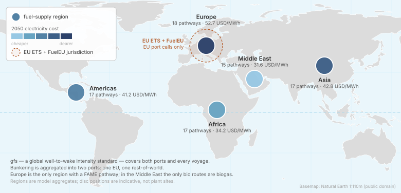
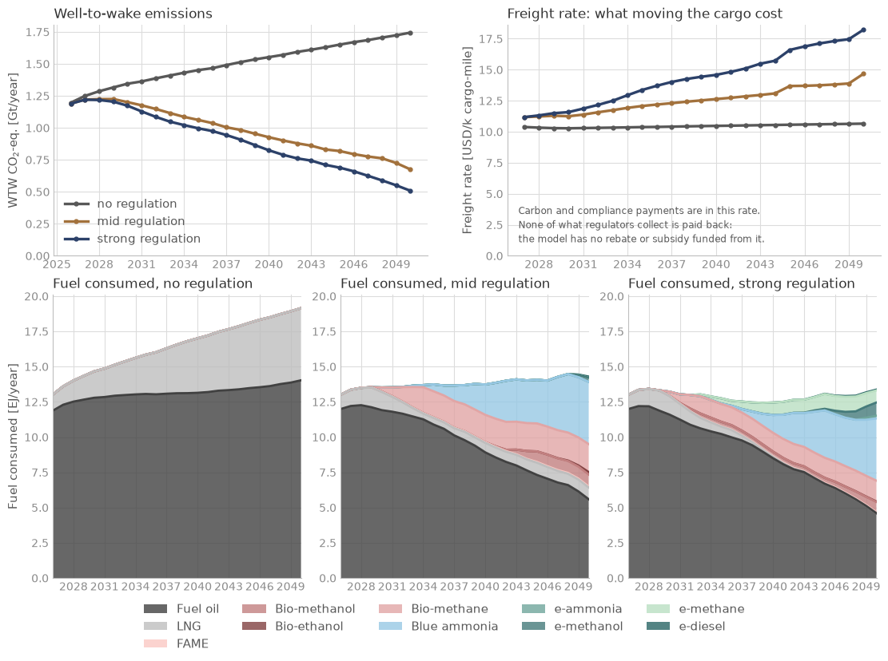
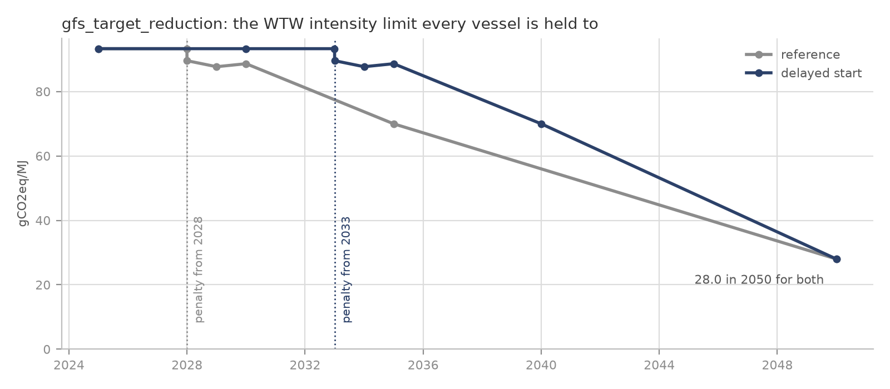

The world fleet#
Global cases · decks simulations/scenarios/ · the case of
Session 2

What does the world fleet burn to 2050 under a global fuel standard?
The case#

Ships: the whole international fleet as the data library describes it, twenty-three classes on the library’s global operating profiles.
Fuels: fuels made in five supply regions, from the library’s plants, producers and feedstocks.
Policy: three scenarios: no regulation; EU ETS and FuelEU with a moderate global fuel standard (mid); the same with a strict one (strong). A fourth, business as usual, keeps the EU measures only and splits each class into an international and a domestic fleet.
Horizon: 2026 to 2050. A yearly run takes about 25 minutes; the
workshop_whatif/copies run on a coarse time grid in a few minutes.
These scenarios test the model across degrees of regulation. They are not the Center’s view of likely futures.
Results#

Without regulation emissions keep rising with trade; under the mid and strong standards they fall to well under 1 Gt CO2e a year by 2050, with LNG, biofuels and blue ammonia taking over from fuel oil. Session 2 draws this figure and lets you move the scenarios’ assumptions.
The deck#
The decks are almost entirely Load statements: every node comes from the data
library’s modules.
# SPDX-FileCopyrightText: 2026 Fonden Mærsk Mc-Kinney Møller Center for Zero Carbon Shipping
# SPDX-License-Identifier: CC-BY-4.0
DEFINE {
Load DefaultModelDefinition
Load DefaultBunkerLogistics
# fleets
Load DefaultFleet
# voyages
Load DefaultPort
# fuels
Load DefaultEmission
Load DefaultFeedstock
Load DefaultFuel
Load DefaultProducer
Load DefaultPlant
Load DefaultRegion
Load DefaultSource
Load DefaultTransport
# regulations
Load DefaultRegulation
Include "../0_includes/mid_regulation.inc"
# calibration
Load DefaultCalibration
# output
Load DefaultReport
Load DefaultPlot
Load DebugPlot
}
EVENTS {
Load DefaultConverterAvailable
Load DefaultTimeStepYearly
}
# SPDX-FileCopyrightText: 2026 Fonden Mærsk Mc-Kinney Møller Center for Zero Carbon Shipping
# SPDX-License-Identifier: CC-BY-4.0
Regulation "gfs" {
Measure = INTENSITY
Scheme = FLEXIBLE
Scope = WTW
IncludeSlip = TRUE
Emissions = Emission("*")
Fuels = Fuel("*")
Jurisdiction = [Port("port_global"), Port("port_europe")]
RemedialCost = Forecast("gfs_remedial_unit")
SharedThreshold = Forecast("gfs_target_reduction")
set_include_vessel("*", TRUE)
}
Forecast "gfs_target_reduction" {
Table = [
"01-01-2025" 1.00
"31-12-2027" 1.00
"01-01-2028" 0.96
"01-01-2029" 0.94
"01-01-2030" 0.95
"01-01-2035" 0.75
"01-01-2050" 0.30
]
Multiplier = 93.3
Extrapolate = FLAT
}
Forecast "gfs_remedial_unit" {
Table = [
"01-01-2025" 0
"31-12-2027" 0
"01-01-2028" 300
"01-01-2050" 300
]
Extrapolate = FLAT
}
# SPDX-FileCopyrightText: 2026 Fonden Mærsk Mc-Kinney Møller Center for Zero Carbon Shipping
# SPDX-License-Identifier: CC-BY-4.0
Regulation "gfs" {
Measure = INTENSITY
Scheme = FLEXIBLE
Scope = WTW
IncludeSlip = TRUE
Emissions = Emission("*")
Fuels = Fuel("*")
Jurisdiction = [Port("port_global"), Port("port_europe")]
RemedialCost = Forecast("gfs_remedial_unit")
SharedThreshold = Forecast("gfs_target_reduction")
set_include_vessel("*", TRUE)
}
Forecast "gfs_target_reduction" {
Table = [
"01-01-2025" 1.00
"31-12-2027" 1.00
"01-01-2028" 0.96
"01-01-2029" 0.94
"01-01-2030" 0.92
"01-01-2031" 0.876
"01-01-2032" 0.832
"01-01-2033" 0.788
"01-01-2034" 0.744
"01-01-2035" 0.70
"01-01-2040" 0.50
"01-01-2050" 0.00
]
Multiplier = 93.3
Extrapolate = FLAT
}
Forecast "gfs_remedial_unit" {
Table = [
"01-01-2025" 0
"31-12-2027" 0
"01-01-2028" 800
"01-01-2050" 800
]
Extrapolate = FLAT
}
# SPDX-FileCopyrightText: 2026 Fonden Mærsk Mc-Kinney Møller Center for Zero Carbon Shipping
# SPDX-License-Identifier: CC-BY-4.0
# basecase_mid_regulation on a coarse timeline. Identical DEFINE block; only the
# time step differs. Its numbers are therefore NOT comparable with the yearly
# basecases - see docs/workshop/02-run-a-global-case.ipynb.
DEFINE {
Load DefaultModelDefinition
Load DefaultBunkerLogistics
# fleets
Load DefaultFleet
# voyages
Load DefaultPort
# fuels
Load DefaultEmission
Load DefaultFeedstock
Load DefaultFuel
Load DefaultProducer
Load DefaultPlant
Load DefaultRegion
Load DefaultSource
Load DefaultTransport
# regulations
Load DefaultRegulation
Include "../0_includes/mid_regulation.inc"
# calibration
Load DefaultCalibration
# output
Load DefaultReport
Load DefaultPlot
Load DebugPlot
}
EVENTS {
Load DefaultConverterAvailable
Include "./includes/time_steps_coarse.inc"
}
# SPDX-FileCopyrightText: 2026 Fonden Mærsk Mc-Kinney Møller Center for Zero Carbon Shipping
# SPDX-License-Identifier: CC-BY-4.0
# Four years, not five. RetrofitFrequency defaults to 5, and is_retrofit_cycle
# tests `age % frequency < time_step`, so a 5-year step makes that always true
# and the drydock gate stops gating. On main the fleet converts late (from 2042
# in the yearly run), so this grid still converts far fewer hulls than the yearly
# run - 112 against 1,140 - and lands 2050 emissions at 711 Mt against 676.
#
# 2027 and 2030 are not a choice: DefaultConverterAvailable declares them, and
# every date the parser sees is merged into one timeline. They are listed here
# so this file states the grid the model will actually use.
Start
Date "01-01-2027"
Date "01-01-2030"
Date "01-01-2034"
Date "01-01-2038"
Date "01-01-2042"
Date "01-01-2046"
Date "01-01-2050"
End
Build it with an AI assistant#
This is the model of the global family: a case on the world fleet, or on a policy applied worldwide, starts from its full prompt. Session 5 shows how to use it.
Full prompt: Session 2’s reference scenario
The global case of Session 2, rebuilt from scratch. The whole international fleet, as the data library describes it, from 2026 to 2050 on Session 2’s coarse grid, under EU ETS, FuelEU and a moderate global fuel standard: the workshop_basecase_mid_regulation scenario.

Tested: built by handing it to a Claude model with no other instructions, directly and through its own start-up prompt, then in Session 5: both decks ran with only the library’s expected warnings, and both matched the results of Session 2 within rounding. It was one of Session 5’s examples until 2026-10-28.
You are helping me build and run a simulation deck for Navigate, the shipping decarbonisation model in this repository. Write the files yourself; do not only describe them.
Before writing anything, read docs/workshop/building-a-deck.md in the Navigate
repository and follow it:
it holds the rules every deck follows and the traps earlier builds fell into.
simulations/scenarios/ holds this case, already built: take its structure,
and the numbers this prompt gives. Where this prompt and the guide disagree,
this prompt wins.
GETTING NAVIGATE RUNNING (do this first)
- Navigate is the repository https://github.com/zerocarbonshipping/navigate-zcs.
If you were not opened in it, look for it on this machine (a folder usually
named navigate-zcs, holding README.md, navigate/ and assumptions/), or ask me
where it is. If it is not on this machine yet, tell me, and propose cloning
it (or downloading the zip from GitHub). Work from the repository root from
then on.
- Check whether Navigate is installed, from the repository root:
python -m pip show navigate-zcs
python -m navigate --help
If both work, go on to the deck.
- If not, the installation steps are in README.md (section "Installation"):
Python 3.12, ideally in its own environment (venv or conda), then
python -m pip install .
from the repository root. The README also has the fixes for the two common
Windows errors (PowerShell refusing to activate a venv, and pip.exe "Access is
denied"). A slower, beginner's walk-through with VS Code is in
docs/tutorials/getting_started.md, also online at
https://zerocarbonshipping.github.io/navigate-zcs/tutorials/getting_started.html
- Show me the commands and wait for my go-ahead before you install, upgrade or
create anything. No extra solver is needed: Navigate comes with HiGHS. Skip the
optional Gurobi extra unless I say I have a full Gurobi licence.
HOW NAVIGATE WORKS (read this before writing anything)
- A deck is one .nav file plus the .inc files it includes. The syntax is explained
in docs/reference_manual/overview.md, and every node type (Fleet, Vessel, Route,
Port, Fuel, Plant, Producer, Regulation, ...) has its own page in
docs/reference_manual/.
- assumptions/ is the data library. `Load DefaultFleet` reads the module file
assumptions/modules/installation/default_fleet.inc, which imports every fleet
of the library; each `Load Default<Name>` reads default_<name>.inc the same way.
`Import Regulation "eu_ets"` reads one node from
assumptions/defaults/installation/Regulation/eu_ets.inc.
- simulations/examples/example_1 to example_4 are complete decks that run: read
them for syntax.
- Run a deck from the repository root, in the Python environment where Navigate
was installed from this repository, with:
python -m navigate <path to the .nav file> -d ./assumptions
(`python -m navigate` run from the repository root always uses this
repository's code; the shorter `navigate` command may point to another copy.)
- A run writes a .log file next to the .nav. The end of the .log has a "Log
summary" table with the number of warnings and errors. `Load DefaultPlot` in
the .nav DEFINE block also writes the charts to plots/ and plots_analysis/.
If you cannot run terminal commands, give me the exact command, wait for me to
paste back the end of the output, and fix whatever it reports.
- To get results as numbers, add `Load DefaultReport` to the .nav DEFINE block.
The run then also writes plots/<deck name>_report_default.xlsx. Its "Global"
sheet has one row per time step, one ConsumedEnergy column per fuel (GJ per
year; the fuel name is in the third header row) and the emissions of all the
fleets together (TotalEquivalentWTW, t CO2e per year).
THE DECK
Build it in a new folder, simulations/user/my_simulation/, with the .nav file
my_simulation.nav and one .inc file per topic in includes/. If that folder
already exists, use my_simulation_2 (then _3, ...) instead, and tell me which.
Write nothing outside that folder: do not change, move or delete any file that
is already in the repository.
THE CASE
The whole international shipping fleet, 2026 to 2050, as the data library
describes it. The model decides which fuel each fleet bunkers and where, how
fast it sails, which ships are retrofitted or ordered, and which efficiency
measures are fitted. Fuel producers decide where to build plants.
1. The world, all from the library's modules
Load, in the DEFINE block, the modules for: the model definition, bunker
logistics, the fleets (DefaultFleet, international shipping only: not the
DefaultFleetInternational and DefaultFleetDomestic pair, which adds the
domestic fleets), the ports, emissions, feedstocks, fuels, producers,
plants, regions, sources and transport. Each is one `Load` line; find the
module names in assumptions/modules/installation/. Do not restate or copy
any of their nodes.
2. Regulation: EU ETS, FuelEU Maritime and a global fuel standard
- The EU ETS and FuelEU Maritime: the library's, with Load DefaultRegulation.
- The global fuel standard: write it yourself, in includes/regulation.inc,
included right after DefaultRegulation. It is a Regulation node named "gfs":
Measure = INTENSITY, Scheme = FLEXIBLE, Scope = WTW, IncludeSlip = TRUE,
every emission and every fuel (Emission("*"), Fuel("*")),
Jurisdiction = both of the library's ports, port_global and port_europe,
every vessel included (set_include_vessel("*", TRUE)),
SharedThreshold = Forecast("gfs_target_reduction"),
RemedialCost = Forecast("gfs_remedial_unit").
Declare the two forecasts in the same file, with Extrapolate = FLAT:
gfs_target_reduction, a fraction of 93.3 gCO2eq/MJ (Multiplier = 93.3):
01-01-2025 1.00, 31-12-2027 1.00, 01-01-2028 0.96, 01-01-2029 0.94,
01-01-2030 0.95, 01-01-2035 0.75, 01-01-2050 0.30
gfs_remedial_unit, USD per ton of excess emission:
01-01-2025 0, 31-12-2027 0, 01-01-2028 300, 01-01-2050 300
These are the Center's scenario values for a moderate standard: copy them
as given, with a comment saying where they come from (this prompt).
3. The rest of the DEFINE block
Load DefaultCalibration after the regulation: it sets the decision behaviour
with wildcards (Fleet "*", ...) that only match nodes already declared.
Then DefaultReport and DefaultPlot.
4. EVENTS: a coarse time grid
Load DefaultConverterAvailable first: it decides from when methanol,
ammonia and electric ships may be ordered, and it declares 2027 and 2030 as
dates of its own. Then include your own includes/time_steps.inc, holding
Start, one Date line for each of 01-01-2027, 01-01-2030, 01-01-2034,
01-01-2038, 01-01-2042, 01-01-2046 and 01-01-2050, and End.
Do NOT load DefaultTimeStepYearly. Steps of four years (not five) after 2030
are on purpose: retrofits are considered every five years, and a five-year
step would let every step count as a retrofit year.
PITFALLS (each cost someone time before)
- This is the whole world fleet: even on this coarse grid a run takes several
minutes (a yearly grid would take twenty or more). If it runs past thirty
minutes, stop it and tell me.
- The library's own nodes raise about 200 warnings of two kinds, "No technology
cost of capital supplied for Fleet(...)" and "Does not have convex load
functions" for some vessels. They are expected: do not try to fix them.
Report any warning of another kind, and any error.
NUMBERS
Every number must come from assumptions/ (through the modules) or from this
prompt. Mark anything else INVENTED in a comment where it appears and list it
in the .nav header; built as described here, there should be none.
DECK RULES
The .nav DEFINE and EVENTS blocks accept only Include and Load. Every node
declaration goes in an .inc file that they include.
BEFORE YOU TELL ME IT WORKS
Run it (or have me run it) as above. Report the exit code and the warning and
error counts from the Log summary. Then, from the report, tell me:
- the well-to-wake emissions of all the fleets in 2026 and in 2050 (Mt CO2e
per year);
- the share of alternative fuels (everything but fuel oil and LNG) in the
energy consumed in 2050;
- the three biggest fuels in 2050.
For comparison, the workshop's own deck for this case gives about 1,190 Mt in
2026, about 710 Mt in 2050 and about 52 % alternative fuels in 2050, with fuel
oil, blue ammonia and bio-methane the three biggest fuels. Say how close you
are, and if you are far off, what in your deck could explain it.
Variants#
A global study: the cost of waiting
Variant of “Session 2’s reference scenario” above. The mid-regulation reference scenario includes a global fuel standard (gfs): a well-to-wake intensity limit that every ship is held to worldwide, tightening from 2028 to 2050. What if it started five years late, but kept the same 2050 target? No deck to build from scratch here: the scenario is run twice, as it is and with every date before 2050 moved later, on the coarse time grid of Session 2 so each run takes a few minutes. The answer is one number worth remembering: the extra megatonnes of CO2e a delay costs, and whether the delayed run catches up by 2050. The change goes in a copy of the regulation file, so the reference scenario itself stays untouched.
How it differs from the scenarios in the repository. The four reference scenarios in simulations/scenarios/ differ in how strict the regulation is: none at all, EU ETS and FuelEU only (business as usual), or those plus a global fuel standard that is moderate (mid) or strict (strong). Both standards start in 2028. This case keeps the mid scenario exactly as it is and changes only when its standard starts, which none of them explores. It also runs on the coarse grid, so compare its two runs with each other, not with the yearly results of Session 2.

The global fuel standard of the mid-regulation scenario (grey) and the same standard started five years later, with the same 2050 target (blue).
Build it from the full prompt of “Session 2’s reference scenario”, with these differences:
Do not rebuild the world: this study runs the mid-regulation deck already there, on the coarse grid of
simulations/scenarios/workshop_whatif/(a few minutes a run).Folder
simulations/user/my_global_study/.reference.navis a copy ofworkshop_whatif/workshop_basecase_mid_regulation.nav, with its two Include paths rewritten so they still point at the original files.delayed.navis the same, except that it includes your own copy ofsimulations/scenarios/0_includes/mid_regulation.inc, asincludes/gfs_delayed.inc. The two decks differ in that one line only, and nothing insimulations/scenarios/changes.In that copy, move every date of
gfs_target_reductionandgfs_remedial_unitthat falls before 2050 by [THE DELAY, e.g. five years], and leave the 2050 rows where they are. Mark each moved row with a comment giving its reference date. The delay is the only INVENTED value.A start moved to 2028 or 2029 falls between two steps of the coarse grid: building-a-deck.md says what to do.
Report, instead of the template’s comparison, side by side: the well-to-wake emissions at every time step; their sum over 2026-2050, weighting each step by the years it stands for (say how), and the extra Mt CO2e the delay costs; the share of energy by fuel in 2030, 2038 and 2050, and whether the delayed run catches up by 2050. Say that these are coarse-grid runs, to compare with each other only.
Tested: 2026-10-06, as what was then Session 5’s fourth example: built cold, it ran
without errors on the first attempt. 2026-10-26, built cold again with a five-year
delay and checked against the criteria above: both decks ran with only the
library’s expected warnings, and the delay added about 1,560 Mt CO2e over
2026-2050 (+6 %), still 20 Mt a year more in 2050. The two decks share one
plots/ folder, so compare them from their reports. On 2026-10-28 it was also
the model the start-up prompt chose for a later and stricter standard, built
cold on two processes: both ran clean first time. Built from this variant on
Haiku the same day, with a five-year delay: clean first time, 1,559 Mt CO2e
extra (+6.1 %). the full prompt that passed is in the repository’s history, commit 02d96755. Folded into a variant on 2026-10-28.
The world fleet, simplified: the global picture at a size you can iterate on
Variant of “Session 2’s reference scenario” above. No geography here: the Center’s reference scenarios model twenty-three vessel classes on the library’s own global operating profiles, and the only “places” are two abstract ports that exist so the EU measures know what they cover. This prompt keeps two or three classes of your choice, imported whole from the library with their own fleets, orderbooks and technologies, against the library’s full fuel-supply chain in five regions and under EU ETS and FuelEU. Expect several minutes per run.
Build it from the full prompt of “Session 2’s reference scenario”, with these differences:
Fleets: two or three classes of the user’s choice (for example
tanker_127k_dwtandbulk_carrier_80k_dwt), each imported whole withImport Fleet "...", so it brings its own vessels, age distribution, orderbook, technologies and retrofit costs. NotLoad DefaultFleet.Geography: none of your own. Load DefaultVoyage for the per-class operating profiles, and DefaultPort for the library’s two abstract ports.
Regulation: the EU ETS and FuelEU at their library settings (DefaultRegulation). No global fuel standard: leave out
includes/regulation.inc.EVENTS: with fewer than the library’s twenty-three fleets, do not load DefaultConverterAvailable (building-a-deck.md says why), and say in the header that every vessel type is orderable from year one. Use DefaultTimeStepYearly rather than the coarse grid. Expect five to ten minutes a run.
Every number comes from the library: if you find yourself writing one, stop and say why the library has none.
Report, instead of the template’s comparison: the fuel mix at both ends of the horizon.
Limits. Fewer fleets than the library’s twenty-three (building-a-deck.md says what that means for DefaultConverterAvailable), and EU ETS and FuelEU only: no global fuel standard.
Tested: as Session 5’s fourth example (added 2026-09-25): built cold, it ran
without errors on the first attempt, but was not checked against the criteria
above. Moved here from Session 5 on 2026-10-26; the full prompt that passed is in the repository’s history, commit 02d96755. Folded into a variant on 2026-10-28.
Run it yourself#
In Colab: Session 2. On your machine, from the repository root:
python -m navigate simulations/scenarios/workshop_whatif/workshop_basecase_mid_regulation.nav -d ./assumptions
To install Navigate, follow the installation steps in the README, or the more detailed Getting started tutorial.